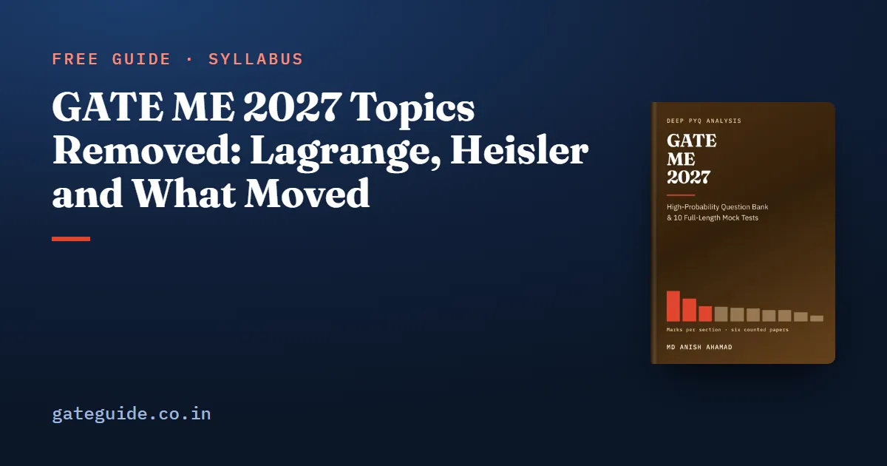

GATE ME 2027 Topics Removed: Lagrange, Heisler and What Moved

Only two phrases left the GATE ME syllabus outright in 2027: Lagrange's equation and Heisler's charts. Everything else that "disappeared" either moved to another paragraph or lost its list of examples while keeping its content. This guide teaches you to tell those three cases apart, so you cut the two lines that are really gone and nothing more.
In this guide
- Key takeaways
- Three ways a phrase can stop being printed
- Lagrange's equation: what goes and what stays
- Heisler's charts: transient conduction is still in
- The two labels that vanished, and where their contents went
- Lines that lost their examples but kept their content
- Why cutting too much is the worse mistake
- A decision rule you can apply to any change
- Quick revision
Key takeaways
- Five 2026 phrases are not printed in 2027, but only two are actually gone: Lagrange's equation and Heisler's charts.
- The labels Computer Integrated Manufacturing and Inventory Control vanished; their contents moved to neighbouring paragraphs.
- The forming line lost its named examples, but forging, rolling, extrusion, drawing and deep drawing are still covered.
- Unsteady conduction and the lumped system remain after Heisler's charts left.
- No counted question from 2022 to 2026 recorded a topic using Lagrange or Heisler.
- Skipping a named topic costs marks; reading an extra line only costs time.
Three ways a phrase can stop being printed
Start with definitions, because the whole guide rests on them.
- A dropped topic is a phrase whose key words appear nowhere in the 2027 document. Nothing in 2027 covers it.
- A moved topic is a phrase that reappears, word for word or nearly, under a different paragraph. The content is still examinable.
- A topic that lost its examples is a line that once listed specific processes and now names only the general idea. The examples are still inside the idea.
The book's comparison found five phrases printed in 2026 and not in 2027. The table sorts them.
| 2026 paragraph | Phrase no longer printed | Which case |
|---|---|---|
| Engineering Mechanics | Lagrange's equation | Dropped; "Lagrange" appears nowhere in 2027 |
| Heat Transfer | Heisler's charts | Dropped; "Heisler" appears nowhere in 2027 |
| Computer Integrated Manufacturing | additive manufacturing | Moved; now its own paragraph |
| Inventory Control | Deterministic models | Moved; now under Production Planning and Control |
| Inventory Control | safety stock inventory control systems | Moved; now under Production Planning and Control |
Remember: Three of the five "removed" phrases are moves. Only Lagrange's equation and Heisler's charts are material you can set aside.
Lagrange's equation: what goes and what stays
Lagrange's equation was a single phrase in Engineering Mechanics. Its removal does not touch the rest of the paragraph: free-body diagrams, friction, plane trusses and frames, virtual work, rigid-body dynamics, and impulse, momentum and energy all remain.
Treat Lagrange's equation as something to recognise in an older textbook or paper, not something to study. No counted question's recorded topic used the word.
Heisler's charts: transient conduction is still in
Heisler's charts are graphs for the temperature inside a slab, cylinder or sphere when the lumped model does not apply. The 2027 Heat Transfer paragraph still names "unsteady heat conduction, lumped parameter system". So transient conduction stays; only the chart method is gone.
That makes the lumped system the transient tool to know. It applies when the Biot number is below 0.1, where is the convection coefficient, is the solid's conductivity and is volume over surface area.
Worked example
A steel sphere of radius 10 mm cools in air with W/m²K. Take W/mK, density 7800 kg/m³ and specific heat 460 J/kgK. For a sphere, mm. So , well below 0.1, and the lumped model holds.
The time constant is density times specific heat times , over :
Trap: Using the radius instead of for a sphere makes three times too large. Near the 0.1 limit, that flips your decision about whether the lumped model is allowed.
The two labels that vanished, and where their contents went
Computer Integrated Manufacturing held two phrases in 2026. "Additive manufacturing" became the new Additive Manufacturing paragraph. "Basic concepts of CAD/CAM and their integration tools" moved word for word into the new Computer Aided Manufacturing and Automation paragraph. Additive manufacturing drew marks in five of the six counted papers, and CAD/CAM with NC/CNC in all six, so neither is a topic to drop.
Inventory Control held two phrases. Both now sit inside Production Planning and Control, as "Inventory Control – deterministic models, safety stock, inventory control systems". Inventory control was examined in all six counted papers.
In one line: When a label vanishes, look for its phrases elsewhere before you cross anything off.
Lines that lost their examples but kept their content
This is where students cut too much. The 2026 forming line listed bulk processes (forging, rolling, extrusion, drawing) and sheet processes (shearing, deep drawing, bending). The 2027 line reads only "Principles of bulk forming and sheet forming processes and estimation of load in these processes".
Every one of those processes is still bulk or sheet forming. The counted papers set extrusion in 2022 S2 (Q58), wire drawing in 2025 (Q39), flat rolling in 2022 S1 (Q56) and 2025 (Q41), and deep drawing in 2026 (Q59). Dropping them because the names went would cost real marks.
The machining line is similar. "Basic machine tools, single and multi-point cutting tools, tool geometry" was rewritten and spread across three new phrases, including ASA and ORS tool geometry. The content grew rather than shrank.
Why cutting too much is the worse mistake
There are two ways to be wrong about a syllabus. You can study something it does not contain, which costs an evening. Or you can skip something it does contain, which costs marks you cannot recover in the hall. These are not symmetric.
The practical rule follows. When the status of a line is genuinely unclear, read it briefly. Lagrange's equation and Heisler's charts are the only two cases in the 2027 comparison where the evidence is clear enough to set the material aside.
A decision rule you can apply to any change
- If the key word appears nowhere in the 2027 PDF, recognise the topic and move on.
- If the words reappear under another paragraph, the topic moved; keep it.
- If a line lost its examples, the examples are still inside the general line; keep them.
- If you are unsure, read it briefly. An hour lost is recoverable; a question you cannot attempt is not.
The book quotes every removed and reworded phrase before and after, with the counted questions that used each, in the GATE ME 2027 book. For who set this syllabus, see the guide to IIT Madras as organising institute. For how raw marks become a score, see the GATE score calculation guide, and keep the GATE 2027 dates in view.
Quick revision
- Only Lagrange's equation and Heisler's charts are truly gone.
- Additive manufacturing and CAD/CAM moved into new paragraphs; both were examined often.
- Inventory control moved under Production Planning and Control; it was set in all six papers.
- Transient conduction stays; use the lumped model when .
- For a sphere, ; for a long cylinder, .
- Forging, rolling, extrusion, drawing and deep drawing are still in, as bulk and sheet forming.
- When unsure whether a line went, read it briefly rather than skip it.
Frequently asked questions
Which topics were removed from the GATE ME 2027 syllabus?
Only two phrases left with words the 2027 document uses nowhere: Lagrange's equation, from Engineering Mechanics, and Heisler's charts, from Heat Transfer. Three other phrases stopped being printed where they were, but every word of them reappears in 2027 under another paragraph. Those moved; they were not removed, so do not drop them.
Is Heisler's chart removed from GATE ME 2027?
Yes, the phrase Heisler's charts is no longer printed, and the word Heisler appears nowhere in the 2027 document. Unsteady heat conduction and the lumped parameter system are still named, so transient conduction stays in the syllabus. No counted question from 2022 to 2026 used the words Heisler or Lagrange in its recorded topic.
Are forging, rolling and extrusion removed from GATE ME 2027?
No. The forming line stopped naming its examples, but it still reads principles of bulk forming and sheet forming processes and estimation of load in these processes. Forging, rolling, extrusion and drawing are bulk forming; shearing, deep drawing and bending are sheet forming. The counted papers set extrusion, wire drawing, rolling and deep drawing.
What happened to Inventory Control in the GATE ME 2027 syllabus?
The paragraph label is gone, but its content moved into Production Planning and Control as Inventory Control with deterministic models, safety stock and inventory control systems. Inventory control was examined in all six counted papers, so treat it as fully in the syllabus. Only the heading changed.
Sources
- GATE 2027 official website (IIT Madras)
- GATE 2027 ME syllabus (IIT Madras)
- GATE 2026 ME syllabus (IIT Guwahati)
Dates, fees and the syllabus are set by the GATE 2027 organising institute and can change. Always confirm at gate2027.iitm.ac.in.